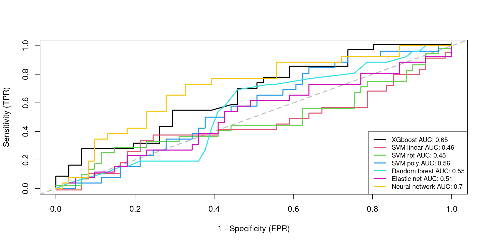
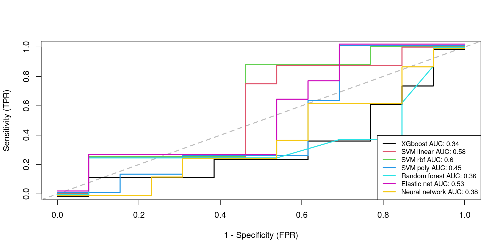

Here we perform a prediction of candidate biomarkers in preeclampsia cfRNA sequencing data.
## Loading required package: ggplot2## Loading required package: latticeWe start by importing the previously filtered and normalized RNA-seq data.
library(SummarizedExperiment)
library(edgeR)
dgeM.filt <- readRDS(file.path("_processed_data", "dgeM.filt.rds"))
seM.filt <- readRDS(file.path("_processed_data", "seM.filt.rds"))
dgeD.filt <- readRDS(file.path("_processed_data", "dgeD.filt.rds"))
seD.filt <- readRDS(file.path("_processed_data", "seD.filt.rds"))
dgeM.filt.training <- readRDS(file.path("_processed_data",
"dgeM.filt.training.rds"))
seM.filt.training <- readRDS(file.path("_processed_data",
"seM.filt.training.rds"))
dgeM.filt.testing <- readRDS(file.path("_processed_data",
"dgeM.filt.testing.rds"))
seM.filt.testing <- readRDS(file.path("_processed_data",
"seM.filt.testing.rds"))
dgeD.filt.subset <- readRDS(file.path("_processed_data",
"dgeD.filt.subset.rds"))
seD.filt.subset <- readRDS(file.path("_processed_data",
"seD.filt.subset.rds"))
DEgenes.trainingM <- readRDS(file.path("_processed_data",
"DEgenes.trainingM.rds"))
DEgenes.testingM <- readRDS(file.path("_processed_data",
"DEgenes.testingM.rds"))
DEgenes.testingD <- readRDS(file.path("_processed_data",
"DEgenes.testingD.rds"))Train-testing subset creation: Intersection between differential expressed genes from training set from Roskams-Hieter et al. (2022) and lowly expressed genes from testing set.
set.seed(111)
intersection.genes <- Reduce(intersect, list(DEgenes.trainingM, rownames(dgeM.filt.testing), rownames(dgeD.filt.subset)))
length(intersection.genes)
[1] 912
#intersection.genes <- intersect(intersect(DEgenes.trainingM, rownames(dgeM.filt.testing)), rownames(dgeD.filt.subset))
#length(intersection.genes)
dgeM.intercept.training <- dgeM.filt.training[intersection.genes,]
dim(dgeM.intercept.training)
[1] 912 244seM.intercept.training <- seM.filt.training[intersection.genes,]
dim(seM.intercept.training)
[1] 912 244
dgeM.intercept.testing <- dgeM.filt.testing[intersection.genes,]
dim(dgeM.intercept.testing)
[1] 912 89seM.intercept.testing <- seM.filt.testing[intersection.genes,]
dim(seM.intercept.testing)
[1] 912 89
dgeD.intercept.testing <- dgeD.filt.subset[intersection.genes,]
dim(dgeD.intercept.testing)
[1] 912 76seD.intercept.testing <- seD.filt.subset[intersection.genes,]
dim(seD.intercept.testing)
[1] 912 76Gestational age is used to classify the samples into its corresponding trimester of pregnancy according to NIH: first trimester (week 1 to week 12), second trimester (week 13 to week 28) and third trimester (week 29 to week 40).
table(as.factor(seM.intercept.training$SamplingGAgroup))
≤12 weeks gestation ≥23 weeks gestation 13-20 weeks gestation
72 84 88 mask <- seM.intercept.training$SamplingGA <= 16
seM.intercept.training$SamplingGAgroup17[mask] <- "Pre17weeks"
dgeM.intercept.training$samples$SamplingGAgroup17[mask] <- "Pre17weeks"
mask <- seM.intercept.training$SamplingGA >= 17
seM.intercept.training$SamplingGAgroup17[mask] <- "Post17weeks"
dgeM.intercept.training$samples$SamplingGAgroup17[mask] <- "Post17weeks"table(as.factor(seM.intercept.training$SamplingGAgroup17))
Post17weeks Pre17weeks
116 128 table(as.factor(seM.intercept.testing$SamplingGAgroup))
≤12 weeks gestation 13-20 weeks gestation
56 33 mask <- seM.intercept.testing$SamplingGA <= 16
seM.intercept.testing$SamplingGAgroup17[mask] <- "Pre17weeks"
dgeM.intercept.testing$samples$SamplingGAgroup17[mask] <- "Pre17weeks"
mask <- seM.intercept.testing$SamplingGA >= 17
seM.intercept.testing$SamplingGAgroup17[mask] <- "Post17weeks"
dgeM.intercept.testing$samples$SamplingGAgroup17[mask] <- "Post17weeks"table(as.factor(seM.intercept.testing$SamplingGAgroup17))
Pre17weeks
89 table(as.factor(seD.intercept.testing$SamplingGAgroup))
1st Trimester 2nd Trimester 3rd Trimester
25 26 25 mask <- seD.intercept.testing$SamplingGA <= 16
seD.intercept.testing$SamplingGAgroup17[mask] <- "Pre17weeks"
dgeD.intercept.testing$samples$SamplingGAgroup17[mask] <- "Pre17weeks"
mask <- seD.intercept.testing$SamplingGA >= 17
seD.intercept.testing$SamplingGAgroup17[mask] <- "Post17weeks"
dgeD.intercept.testing$samples$SamplingGAgroup17[mask] <- "Post17weeks"table(as.factor(seD.intercept.testing$SamplingGAgroup17))
Post17weeks Pre17weeks
55 21 training.df <- data.frame(Preeclampsia = seM.intercept.training$Preeclampsia,
SamplingGA = scale(seM.intercept.training$SamplingGA, scale = TRUE, center = TRUE),
SamplingGAgroup17 = seM.intercept.training$SamplingGAgroup17,
scale(t(assays(seM.intercept.training)$logCPM), scale = TRUE, center = TRUE),
MotherID = seM.intercept.training$MotherID
)mask <- seM.intercept.training$SamplingGAgroup17 == "Pre17weeks"
pre17.training.df <- training.df[mask,]library(dplyr)
Attaching package: 'dplyr'
The following object is masked from 'package:Biobase':
combine
The following objects are masked from 'package:GenomicRanges':
intersect, setdiff, union
The following object is masked from 'package:GenomeInfoDb':
intersect
The following objects are masked from 'package:IRanges':
collapse, desc, intersect, setdiff, slice, union
The following objects are masked from 'package:S4Vectors':
first, intersect, rename, setdiff, setequal, union
The following objects are masked from 'package:BiocGenerics':
combine, intersect, setdiff, union
The following object is masked from 'package:matrixStats':
count
The following object is masked from 'package:kableExtra':
group_rows
The following objects are masked from 'package:stats':
filter, lag
The following objects are masked from 'package:base':
intersect, setdiff, setequal, union
pre17.training.df <- pre17.training.df %>%
group_by(MotherID) %>%
slice_min(order_by = SamplingGA) %>%
ungroup() %>%
#select(-MotherID, -SamplingGAgroup17)
select(-MotherID, -SamplingGAgroup17, -SamplingGA)Created from Discovery and Validation 2 dataset in the study by Moufarrej et al. (2022).
testing.df1 <- data.frame(Preeclampsia = seM.intercept.testing$Preeclampsia,
SamplingGA = scale(seM.intercept.testing$SamplingGA, scale = TRUE, center = TRUE),
SamplingGAgroup17 = seM.intercept.testing$SamplingGAgroup17,
scale(t(assays(seM.intercept.testing)$logCPM), scale = TRUE, center = TRUE),
MotherID = seM.intercept.testing$MotherID
)mask <- seM.intercept.testing$SamplingGAgroup17 == "Pre17weeks"
pre17.testing.df1 <- testing.df1[mask,]pre17.testing.df1 <- pre17.testing.df1 %>%
group_by(MotherID) %>%
slice_min(order_by = SamplingGA) %>%
ungroup() %>%
select(-MotherID, -SamplingGAgroup17, -SamplingGA)Created from the dataset used in the study by Del Vecchio et al. (2021).
testing.df2 <- data.frame(Preeclampsia = seD.intercept.testing$Preeclampsia,
SamplingGA = scale(seD.intercept.testing$SamplingGA, scale = TRUE, center = TRUE),
SamplingGAgroup17 = seD.intercept.testing$SamplingGAgroup17,
scale(t(assays(seD.intercept.testing)$logCPM), scale = TRUE, center = TRUE),
MotherID = seD.intercept.testing$MotherID
)mask <- seD.intercept.testing$SamplingGAgroup17 == "Pre17weeks"
pre17.testing.df2 <- testing.df2[mask,]pre17.testing.df2 <- pre17.testing.df2 %>%
group_by(MotherID) %>%
slice_min(order_by = SamplingGA) %>%
ungroup() %>%
select(-MotherID, -SamplingGAgroup17, -SamplingGA)Given the application of the current paper, the False Negative Rate (FNR) metric is a particularly relevant metric, since it would imply classifying as healthy an individual with cancer. Therefore, that patients will not receive treatment, which will cause serious consequences. Furthermore, it could also be considered the False Positive Rate (FPR), which results in an undesirable situation where a proportion of healthy individuals are categorized as ill. This would subject a healthy patient to unnecessary treatment and its potential side effects. However, since the expected consequences are not that severe, FNR is prioritized in the analysis.
FNR <- function(proba.pred, truth){
class.pred <- as.numeric(proba.pred > 0.35)
conf <- table(truth, class.pred)
print(conf)
FNR <- conf[2, 1] / sum(conf[2, 1], conf[2, 2])
return(FNR)
}FPR <- function(proba.pred, truth){
class.pred <- as.numeric(proba.pred > 0.35)
conf <- table(truth, class.pred)
print(conf)
FPR <- conf[1, 2] / sum(conf[1, 1], conf[1, 2])
return(FPR)
}modelLookup("xgbTree")
model parameter label forReg forClass
1 xgbTree nrounds # Boosting Iterations TRUE TRUE
2 xgbTree max_depth Max Tree Depth TRUE TRUE
3 xgbTree eta Shrinkage TRUE TRUE
4 xgbTree gamma Minimum Loss Reduction TRUE TRUE
5 xgbTree colsample_bytree Subsample Ratio of Columns TRUE TRUE
6 xgbTree min_child_weight Minimum Sum of Instance Weight TRUE TRUE
7 xgbTree subsample Subsample Percentage TRUE TRUE
probModel
1 TRUE
2 TRUE
3 TRUE
4 TRUE
5 TRUE
6 TRUE
7 TRUE# CV technique which will be passed into the train() function
train_control = trainControl(method = "cv", number = 10, search = "grid",
summaryFunction = twoClassSummary,
allowParallel = TRUE,
# Estimate class probabilities
classProbs=TRUE)
# tuning grid
set.seed(111)
#xgboostGrid <- expand.grid(max_depth = c(3, 4, 5, 6, 7), nrounds = (1:20)*10, eta = c(0.4, 0.5),gamma = c(0.5,1, 1.5),subsample = #c(0.8),min_child_weight = c(2),colsample_bytree = c(0.8))
xgboostGrid <- expand.grid(max_depth = c(3, 4, 5, 6, 7), nrounds = (1:20)*10, eta = c(0.2, 0.3, 0.4, 0.5),gamma = c(0.5,1, 1.5),subsample = c(0.8),min_child_weight = c(2),colsample_bytree = c(0.8))
# hyperparaemeter search for XGboost classifier tree model
model = caret::train(Preeclampsia~., data = pre17.training.df,
method = "xgbTree",
trControl = train_control,
metric = "ROC",
tuneGrid = xgboostGrid,
verbosity = 0,
verbose = FALSE,
#num.threads = 18 #cores in use
)
#print(model)#predict on test data
pred1.y <- predict(model, pre17.testing.df1, type = "prob")[,2]
# out of sample performance metrics
test1.y <- as.numeric(pre17.testing.df1$Preeclampsia)-1
pROC::auc(test1.y, pred1.y, direction = "<")
Setting levels: control = 0, case = 1
Area under the curve: 0.6479
FNR(pred1.y, test1.y)
class.pred
truth 0 1
0 56 5
1 19 7
[1] 0.7307692FPR(pred1.y, test1.y)
class.pred
truth 0 1
0 56 5
1 19 7
[1] 0.08196721
roc_xgboost_pe_test1 <- ROCit::rocit(score=pred1.y,class=test1.y)# Add to output
res.testing1[1, ] <- c(pROC::auc(test1.y, pred1.y, direction = "<"), FNR(pred1.y, test1.y), FPR(pred1.y, test1.y))
Setting levels: control = 0, case = 1rownames(res.testing1)[nrow(res.testing1)] <- 'XGBOOST'#predict on test data
pred2.y <- predict(model, pre17.testing.df2, type = "prob")[,2]
# out of sample performance metrics
test2.y <- as.numeric(pre17.testing.df2$Preeclampsia)-1
pROC::auc(test2.y, pred2.y, direction = "<")
Setting levels: control = 0, case = 1
Area under the curve: 0.3365
FNR(pred2.y, test2.y)
class.pred
truth 0 1
0 8 5
1 7 1
[1] 0.875FPR(pred2.y, test2.y)
class.pred
truth 0 1
0 8 5
1 7 1
[1] 0.3846154
roc_xgboost_pe_test2 <- ROCit::rocit(score=pred2.y,class=test2.y)# Add to output
res.testing2[1, ] <- c(pROC::auc(test2.y, pred2.y, direction = "<"), FNR(pred2.y, test2.y), FPR(pred2.y, test2.y))
Setting levels: control = 0, case = 1
class.pred
truth 0 1
0 8 5
1 7 1
class.pred
truth 0 1
0 8 5
1 7 1rownames(res.testing2)[nrow(res.testing2)] <- 'XGBOOST'Class imbalance is identified since there are 27.5% normotensive and 72.5% preeclampsia pregnancies. Unbalanced problems should be addressed when applying SVM, since it aims to separate the space into two parts.
#remotes::install_github("cran/DMwR")smote_dataset <- as.data.frame(pre17.training.df)
smote_dataset$Preeclampsia <- as.factor(smote_dataset$Preeclampsia)
table(pre17.training.df$Preeclampsia)
no yes
66 24 #When perc.over is 100, we create 1 new example (100/100 = 1)
library(DMwR)
Loading required package: grid
Registered S3 method overwritten by 'quantmod':
method from
as.zoo.data.frame zoo set.seed(111)
resampled.training.df <- SMOTE(Preeclampsia ~ ., smote_dataset, perc.over = 70, k =5)
table(resampled.training.df$Preeclampsia)
no yes
32 40 reweight <- function(pi, q1, r1) {
r0 <- 1 - r1
q0 <- 1 - q1
tot <- pi * (q1 / r1) + (1 - pi) * (q0 / r0)
w <- pi * (q1 / r1) / tot
return(w)
}modelLookup("svmLinearWeights")
model parameter label forReg forClass probModel
1 svmLinearWeights cost Cost FALSE TRUE TRUE
2 svmLinearWeights weight Class Weight FALSE TRUE TRUEtrain_control = trainControl(method = "cv", number = 10, search = "grid",
summaryFunction = twoClassSummary,
allowParallel = TRUE,
# Estimate class probabilities
classProbs=TRUE)
set.seed(50)
svmgrid <- expand.grid(cost = c(0.0001, 0.001,0.01,0.1,1,3, 5, 10), weight = c(0.01, 0.05, 0.1,0.5, 0.7,1,5,10))
# training a svm classifier with liearn kernel model while tuning parameters
model = caret::train(Preeclampsia~., data = resampled.training.df,
method = "svmLinearWeights",
trControl = train_control,
metric = "ROC",
tuneGrid = svmgrid)
# summarizing the results
#print(model)#predict on test data
pred1.y <- predict(model, pre17.testing.df1, type = "prob")[,2]
q1 <- sum(pre17.training.df$Preeclampsia == "yes") / length(pre17.training.df$Preeclampsia)
r1 <- sum(resampled.training.df$Preeclampsia == "yes") / length(resampled.training.df$Preeclampsia)
reweighted.probs1 <- sapply(pred1.y, reweight, q1 = q1, r1 = r1)
# out of sample performance metrics
test1.y <- as.numeric(pre17.testing.df1$Preeclampsia) -1
pROC::auc(test1.y, reweighted.probs1, direction = "<")
Setting levels: control = 0, case = 1
Area under the curve: 0.4571
FNR(reweighted.probs1, test1.y)
class.pred
truth 0 1
0 50 11
1 19 7
[1] 0.7307692FPR(reweighted.probs1, test1.y)
class.pred
truth 0 1
0 50 11
1 19 7
[1] 0.1803279
roc_SVMlinear_pe_test1 <- ROCit::rocit(score=reweighted.probs1,class=test1.y)# Add to output
res.testing1 <- rbind.data.frame(res.testing1, c(pROC::auc(test1.y, reweighted.probs1, direction = "<"), FNR(reweighted.probs1, test1.y), FPR(reweighted.probs1, test1.y)))
Setting levels: control = 0, case = 1rownames(res.testing1)[nrow(res.testing1)] <- 'SVMLinear'#predict on test data
pred2.y <- predict(model, pre17.testing.df2, type = "prob")[,2]
q1 <- sum(pre17.training.df$Preeclampsia == "yes") / length(pre17.training.df$Preeclampsia)
r1 <- sum(resampled.training.df$Preeclampsia == "yes") / length(resampled.training.df$Preeclampsia)
reweighted.probs2 <- sapply(pred2.y, reweight, q1 = q1, r1 = r1)
# out of sample performance metrics
test2.y <- as.numeric(pre17.testing.df2$Preeclampsia) -1
pROC::auc(test2.y, reweighted.probs2, direction = "<")
Setting levels: control = 0, case = 1
Area under the curve: 0.5769
FNR(reweighted.probs2, test2.y)
class.pred
truth 0 1
0 9 4
1 6 2
[1] 0.75FPR(reweighted.probs2, test2.y)
class.pred
truth 0 1
0 9 4
1 6 2
[1] 0.3076923
roc_SVMlinear_pe_test2 <- ROCit::rocit(score=reweighted.probs2,class=test2.y)# Add to output
res.testing2 <- rbind.data.frame(res.testing2, c(pROC::auc(test2.y, reweighted.probs2, direction = "<"), FNR(reweighted.probs2, test2.y), FPR(reweighted.probs2, test2.y)))
Setting levels: control = 0, case = 1rownames(res.testing2)[nrow(res.testing2)] <- 'SVMLinear'modelLookup("svmRadial")
model parameter label forReg forClass probModel
1 svmRadial sigma Sigma TRUE TRUE TRUE
2 svmRadial C Cost TRUE TRUE TRUEtrain_control = trainControl(method = "cv", number = 10, search = "grid",
summaryFunction = twoClassSummary,
allowParallel = TRUE,
# Estimate class probabilities
classProbs=TRUE)
set.seed(50)
# Customzing the tuning grid
svmgrid <- expand.grid(sigma = c(1, 0.1, 0.01, 0.001, 0.0001, 0.00001,0.000001),
C = c(0.01,0.1,1, 5, 10, 50, 80, 90, 100, 105, 110, 200, 1000))
# training a svm with rbf kernel classifier model while tuning parameters
model = caret::train(Preeclampsia~., data = resampled.training.df,
method = "svmRadial",
trControl = train_control,
metric = "ROC",
tuneGrid = svmgrid)
# summarizing the results
#print(model)#predict on test data
pred1.y <- predict(model, pre17.testing.df1, type = "prob")[,2]
q1 <- sum(pre17.training.df$Preeclampsia == "yes") / length(pre17.training.df$Preeclampsia)
r1 <- sum(resampled.training.df$Preeclampsia == "yes") / length(resampled.training.df$Preeclampsia)
reweighted.probs1 <- sapply(pred1.y, reweight, q1 = q1, r1 = r1)
# out of sample performance metrics
test1.y <- as.numeric(pre17.testing.df1$Preeclampsia)-1
pROC::auc(test1.y, reweighted.probs1, direction = "<")
Setting levels: control = 0, case = 1
Area under the curve: 0.4508
FNR(reweighted.probs1, test1.y)
class.pred
truth 0 1
0 49 12
1 19 7
[1] 0.7307692FPR(reweighted.probs1, test1.y)
class.pred
truth 0 1
0 49 12
1 19 7
[1] 0.1967213
roc_SVMlrbf_pe_test1 <- ROCit::rocit(score=reweighted.probs1,class=test1.y)# Add to output
res.testing1 <- rbind.data.frame(res.testing1, c(pROC::auc(test1.y, reweighted.probs1, direction = "<"), FNR(reweighted.probs1, test1.y), FPR(reweighted.probs1, test1.y)))
Setting levels: control = 0, case = 1rownames(res.testing1)[nrow(res.testing1)] <- 'SVMRadial'#predict on test data
pred2.y <- predict(model, pre17.testing.df2, type = "prob")[,2]
q1 <- sum(pre17.training.df$Preeclampsia == "yes") / length(pre17.training.df$Preeclampsia)
r1 <- sum(resampled.training.df$Preeclampsia == "yes") / length(resampled.training.df$Preeclampsia)
reweighted.probs2 <- sapply(pred2.y, reweight, q1 = q1, r1 = r1)
# out of sample performance metrics
test2.y <- as.numeric(pre17.testing.df2$Preeclampsia) -1
pROC::auc(test2.y, pred2.y, direction = "<")
Setting levels: control = 0, case = 1
Area under the curve: 0.5962
FNR(pred2.y, test2.y)
class.pred
truth 0 1
0 7 6
1 5 3
[1] 0.625FPR(pred2.y, test2.y)
class.pred
truth 0 1
0 7 6
1 5 3
[1] 0.4615385
roc_SVMlrbf_pe_test2 <- ROCit::rocit(score=reweighted.probs2,class=test2.y)# Add to output
res.testing2 <- rbind.data.frame(res.testing2, c(pROC::auc(test2.y, reweighted.probs2, direction = "<"), FNR(reweighted.probs2, test2.y), FPR(reweighted.probs2, test2.y)))
Setting levels: control = 0, case = 1rownames(res.testing2)[nrow(res.testing2)] <- 'SVMRadial'modelLookup("svmPoly")
model parameter label forReg forClass probModel
1 svmPoly degree Polynomial Degree TRUE TRUE TRUE
2 svmPoly scale Scale TRUE TRUE TRUE
3 svmPoly C Cost TRUE TRUE TRUEtrain_control = trainControl(method = "cv", number = 10, search = "grid",
summaryFunction = twoClassSummary,
allowParallel = TRUE,
# Estimate class probabilities
classProbs=TRUE)
set.seed(111)
svmgrid <- expand.grid(degree = c(2,3,4,5),
scale = c(2,3,4,5),
C = c(0.001,0.01,0.1,0.5,1,3)
)
# training a svm with poly kernel classifier tree model while tuning parameters
model = caret::train(Preeclampsia~., data = resampled.training.df,
method = "svmPoly",
trControl = train_control,
metric = "ROC",
tuneGrid = svmgrid)
#print(model)#predict on test data
pred1.y <- predict(model, pre17.testing.df1, type = "prob")[,2]
q1 <- sum(pre17.training.df$Preeclampsia == "yes") / length(pre17.training.df$Preeclampsia)
r1 <- sum(resampled.training.df$Preeclampsia == "yes") / length(resampled.training.df$Preeclampsia)
reweighted.probs1 <- sapply(pred1.y, reweight, q1 = q1, r1 = r1)
# out of sample performance metrics
test1.y <- as.numeric(pre17.testing.df1$Preeclampsia)-1
pROC::auc(test1.y, reweighted.probs1, direction = "<")
Setting levels: control = 0, case = 1
Area under the curve: 0.5631
FNR(reweighted.probs1, test1.y)
class.pred
truth 0 1
0 51 10
1 23 3
[1] 0.8846154FPR(reweighted.probs1, test1.y)
class.pred
truth 0 1
0 51 10
1 23 3
[1] 0.1639344
roc_SVMpoly_pe_test1 <- ROCit::rocit(score=reweighted.probs1,class=test1.y)# Add to output
res.testing1 <- rbind.data.frame(res.testing1, c(pROC::auc(test1.y, reweighted.probs1, direction = "<"), FNR(reweighted.probs1, test1.y), FPR(reweighted.probs1, test1.y)))
Setting levels: control = 0, case = 1rownames(res.testing1)[nrow(res.testing1)] <- 'SVMPoly'#predict on test data
pred2.y <- predict(model, pre17.testing.df2, type = "prob")[,2]
q1 <- sum(pre17.training.df$Preeclampsia == "yes") / length(pre17.training.df$Preeclampsia)
r1 <- sum(resampled.training.df$Preeclampsia == "yes") / length(resampled.training.df$Preeclampsia)
reweighted.probs2 <- sapply(pred2.y, reweight, q1 = q1, r1 = r1)
# out of sample performance metrics
test2.y <- as.numeric(pre17.testing.df2$Preeclampsia) -1
pROC::auc(test2.y, reweighted.probs2, direction = "<")
Setting levels: control = 0, case = 1
Area under the curve: 0.4519
FNR(reweighted.probs2, test2.y)
class.pred
truth 0 1
0 10 3
1 7 1
[1] 0.875FPR(reweighted.probs2, test2.y)
class.pred
truth 0 1
0 10 3
1 7 1
[1] 0.2307692
roc_SVMpoly_pe_test2 <- ROCit::rocit(score=reweighted.probs2,class=test2.y)# Add to output
res.testing2 <- rbind.data.frame(res.testing2, c(pROC::auc(test2.y, reweighted.probs2, direction = "<"), FNR(reweighted.probs2, test2.y), FPR(reweighted.probs2, test2.y)))
Setting levels: control = 0, case = 1rownames(res.testing2)[nrow(res.testing2)] <- 'SVMPoly'modelLookup("rf")
model parameter label forReg forClass probModel
1 rf mtry #Randomly Selected Predictors TRUE TRUE TRUEtrain_control = trainControl(method = "cv", number = 10, search = "grid",
summaryFunction = twoClassSummary,
allowParallel = TRUE,
# Estimate class probabilities
classProbs=TRUE)
set.seed(111)
rfgrid <- expand.grid(mtry = c(1:18)
)
# training a randomForest classifier tree model while tuning parameters
model = caret::train(Preeclampsia~., data = pre17.training.df,
method = "rf",
trControl = train_control,
metric = "ROC",
importance = T,
ntree = 80,
#maxnodes = 30,
nodesize = 1, #default for classification
tuneGrid = rfgrid)
#print(model)#predict on test data
pred1.y <- predict(model, pre17.testing.df1, type = "prob")[,2]
# out of sample performance metrics
test1.y <- as.numeric(pre17.testing.df1$Preeclampsia)-1
pROC::auc(test1.y, pred1.y, direction = "<")
Setting levels: control = 0, case = 1
Area under the curve: 0.5473
FNR(pred1.y, test1.y)
class.pred
truth 0 1
0 37 24
1 15 11
[1] 0.5769231FPR(pred1.y, test1.y)
class.pred
truth 0 1
0 37 24
1 15 11
[1] 0.3934426
roc_rf_pe_test1 <- ROCit::rocit(score=pred1.y,class=test1.y)# Add to output
res.testing1 <- rbind.data.frame(res.testing1, c(pROC::auc(test1.y, pred1.y, direction = "<"), FNR(pred1.y, test1.y), FPR(pred1.y, test1.y)))
Setting levels: control = 0, case = 1rownames(res.testing1)[nrow(res.testing1)] <- 'RandomForest'#predict on test data
pred2.y <- predict(model, pre17.testing.df2, type = "prob")[,2]
# out of sample performance metrics
test2.y <- as.numeric(pre17.testing.df2$Preeclampsia) -1
pROC::auc(test2.y, pred2.y, direction = "<")
Setting levels: control = 0, case = 1
Area under the curve: 0.3558
FNR(pred2.y, test2.y)
class.pred
truth 0 1
0 8 5
1 6 2
[1] 0.75FPR(pred2.y, test2.y)
class.pred
truth 0 1
0 8 5
1 6 2
[1] 0.3846154
roc_rf_pe_test2 <- ROCit::rocit(score=pred2.y,class=test2.y)# Add to output
res.testing2 <- rbind.data.frame(res.testing2, c(pROC::auc(test2.y, pred2.y, direction = "<"), FNR(pred2.y, test2.y), FPR(pred2.y, test2.y)))
Setting levels: control = 0, case = 1rownames(res.testing2)[nrow(res.testing2)] <- 'RandomForest'modelLookup("glmnet")
model parameter label forReg forClass probModel
1 glmnet alpha Mixing Percentage TRUE TRUE TRUE
2 glmnet lambda Regularization Parameter TRUE TRUE TRUEtrain_control = trainControl(method = "cv", number = 10, search = "grid",
summaryFunction = twoClassSummary,
allowParallel = TRUE,
# Estimate class probabilities
classProbs=TRUE)
set.seed(111)
netgrid <- expand.grid(alpha = c(0,0.1, 0.2, 0.5, 0.7, 1),lambda = c(0.01, 0.1, 0.15, 0.2, 0.25, 0.3, 0.35, 0.4, 0.5, 0.7,1))
# training a elastic net classifier tree model while tuning parameters
model = caret::train(Preeclampsia~., data = pre17.training.df,
method = "glmnet",
trControl = train_control,
metric = "ROC",
tuneGrid = netgrid)
# summarizing the results
#print(model)#predict on test data
pred1.y <- predict(model, pre17.testing.df1, type = "prob")[,2]
# out of sample performance metrics
test1.y <- as.numeric(pre17.testing.df1$Preeclampsia)-1
pROC::auc(test1.y, pred1.y, direction = "<")
Setting levels: control = 0, case = 1
Area under the curve: 0.5126
FNR(pred1.y, test1.y)
class.pred
truth 0 1
0 49 12
1 20 6
[1] 0.7692308FPR(pred1.y, test1.y)
class.pred
truth 0 1
0 49 12
1 20 6
[1] 0.1967213
roc_elastic_pe_test1 <- ROCit::rocit(score=pred1.y,class=test1.y)# Add to output
res.testing1 <- rbind.data.frame(res.testing1, c(pROC::auc(test1.y, pred1.y, direction = "<"), FNR(pred1.y, test1.y), FPR(pred1.y, test1.y)))
Setting levels: control = 0, case = 1rownames(res.testing1)[nrow(res.testing1)] <- 'ElasticNet'#predict on test data
pred2.y <- predict(model, pre17.testing.df2, type = "prob")[,2]
# out of sample performance metrics
test2.y <- as.numeric(pre17.testing.df2$Preeclampsia) -1
pROC::auc(test2.y, pred2.y, direction = "<")
Setting levels: control = 0, case = 1
Area under the curve: 0.5288
FNR(pred2.y, test2.y)
class.pred
truth 0 1
0 7 6
1 6 2
[1] 0.75FPR(pred2.y, test2.y)
class.pred
truth 0 1
0 7 6
1 6 2
[1] 0.4615385
roc_elastic_pe_test2 <- ROCit::rocit(score=pred2.y,class=test2.y)# Add to output
res.testing2 <- rbind.data.frame(res.testing2, c(pROC::auc(test2.y, pred2.y, direction = "<"), FNR(pred2.y, test2.y), FPR(pred2.y, test2.y)))
Setting levels: control = 0, case = 1rownames(res.testing2)[nrow(res.testing2)] <- 'ElasticNet'library(tensorflow)
Attaching package: 'tensorflow'
The following object is masked from 'package:caret':
trainlibrary(keras)
Attaching package: 'keras'
The following object is masked from 'package:BiocGenerics':
normalizelibrary(tfruns)
tensorflow::set_random_seed(111)x_train <- as.matrix(pre17.training.df[,-1])
y_train <- as.matrix(as.numeric(pre17.training.df$Preeclampsia)-1)
x_test1<- as.matrix(pre17.testing.df1[,-1])
y_test1 <- as.matrix(as.numeric(pre17.testing.df1$Preeclampsia)-1)
x_test2<- as.matrix(pre17.testing.df2[,-1])
y_test2 <- as.matrix(as.numeric(pre17.testing.df2$Preeclampsia)-1)
x_train_shape <- length(colnames(x_train))model <- keras_model_sequential()
model %>%
layer_dense(units = 1000, activation = 'relu',
input_shape = c(x_train_shape),
kernel_regularizer = regularizer_l1_l2(l1 = 0.0000001, l2 = 0.000001),
bias_regularizer = regularizer_l1_l2(l1 = 0.00001, l2 = 0.0001),
kernel_constraint =constraint_maxnorm(max_value = 2, axis = 0),
#bias_constraint =constraint_maxnorm(max_value = 3, axis = 0),
activity_regularizer= regularizer_l1_l2(l1 = 0.01, l2 = 0.00001),
) %>%
layer_dropout(rate = 0.7) %>%
layer_batch_normalization() %>%
layer_dense(units = 350, activation = 'relu',
kernel_regularizer = regularizer_l1_l2(l1 = 0.1, l2 = 0.1),
kernel_constraint = constraint_minmaxnorm(max_value = 2, min_value = 0, axis = 1),
bias_regularizer = regularizer_l1_l2(l1 = 0.00001, l2 = 0.000001),
#bias_constraint =constraint_maxnorm(max_value = 3, axis = 0),
activity_regularizer = regularizer_l1_l2(l1 = 0.1, l2 = 0.000001),
) %>%
layer_dropout(rate = 0.3) %>%
layer_batch_normalization() %>%
layer_dense(units = 125, activation = 'relu',
kernel_regularizer = regularizer_l1_l2(l1 = 0.01, l2 = 0.01),
kernel_constraint = constraint_minmaxnorm(max_value = 2, min_value = 0, axis = 1),
#bias_regularizer = regularizer_l1_l2(l1 = 0.00001, l2 = 0.000001),
#bias_constraint =constraint_maxnorm(max_value = 3, axis = 0),
activity_regularizer = regularizer_l1_l2(l1 = 0.001, l2 = 0.000001),
) %>%
layer_dropout(rate = 0.3) %>%
layer_batch_normalization() %>%
layer_dense(units = 1, activation = 'sigmoid')loss_fn <- loss_binary_crossentropy()
auc <- metric_auc()
adam <- optimizer_adam(learning_rate = 0.0001, ema_momentum = 0.8)
model %>% compile(
optimizer = adam,
loss = loss_fn,
metrics = "AUC"
)model %>% fit(x_train, y_train, epochs = 75, batch_size =3)TESTING 1
model %>% evaluate(x_test1, y_test1, verbose = 2)
3/3 - 0s - loss: 17.2937 - auc: 0.7071 - 230ms/epoch - 77ms/step
loss auc
17.2936935 0.7071249 TESTING 2
model %>% evaluate(x_test2, y_test2, verbose = 2)
1/1 - 0s - loss: 21.4332 - auc: 0.4135 - 14ms/epoch - 14ms/step
loss auc
21.4331818 0.4134615 b.1<-model %>% predict(x_test1) #%>% `>`(0.5) %>% k_cast("int32")
3/3 - 0s - 75ms/epoch - 25ms/stepb.1 <- as.numeric(b.1)
b.2<-model %>% predict(x_test2) #%>% `>`(0.5) %>% k_cast("int32")
1/1 - 0s - 10ms/epoch - 10ms/stepb.2 <- as.numeric(b.2)Testing 1
pROC::auc(as.numeric(y_test1), b.1, direction = "<")
Setting levels: control = 0, case = 1
Area under the curve: 0.7037
FNR(b.1, y_test1)
class.pred
truth 0 1
0 38 23
1 7 19
[1] 0.2692308FPR(b.1, y_test1)
class.pred
truth 0 1
0 38 23
1 7 19
[1] 0.3770492
roc_nnet_pe_test1 <- ROCit::rocit(score=b.1,class=as.numeric(y_test1))# Add to output
res.testing1 <- rbind.data.frame(res.testing1, c(pROC::auc(as.numeric(y_test1), b.1), FNR(b.1, y_test1), FPR(b.1, y_test1)))
Setting levels: control = 0, case = 1
Setting direction: controls < casesrownames(res.testing1)[nrow(res.testing1)] <- 'KerasNN'Testing 2
pROC::auc(as.numeric(y_test2), b.2, direction = "<")
Setting levels: control = 0, case = 1
Area under the curve: 0.3846
FNR(b.2, y_test2)
class.pred
truth 0 1
0 8 5
1 6 2
[1] 0.75FPR(b.2, y_test2)
class.pred
truth 0 1
0 8 5
1 6 2
[1] 0.3846154
roc_nnet_pe_test2 <- ROCit::rocit(score=b.2,class=as.numeric(y_test2))# Add to output
res.testing2 <- rbind.data.frame(res.testing2, c(pROC::auc(as.numeric(y_test2), b.2, direction = "<"), FNR(b.2, y_test2), FPR(b.2, y_test2)))
Setting levels: control = 0, case = 1rownames(res.testing2)[nrow(res.testing2)] <- 'KerasNN'Testing 1

Testing 2

(res.testing1)
AUC FNR FPR
XGBOOST 0.6478562 0.7307692 0.08196721
SVMLinear 0.4571248 0.7307692 0.18032787
SVMRadial 0.4508197 0.7307692 0.19672131
SVMPoly 0.5630517 0.8846154 0.16393443
RandomForest 0.5472888 0.5769231 0.39344262
ElasticNet 0.5126103 0.7692308 0.19672131
KerasNN 0.7036570 0.2692308 0.37704918(res.testing2)
AUC FNR FPR
XGBOOST 0.3365385 0.875 0.3846154
SVMLinear 0.5769231 0.750 0.3076923
SVMRadial 0.5961538 0.750 0.3076923
SVMPoly 0.4519231 0.875 0.2307692
RandomForest 0.3557692 0.750 0.3846154
ElasticNet 0.5288462 0.750 0.4615385
KerasNN 0.3846154 0.750 0.3846154sessionInfo()
R version 4.4.0 (2024-04-24)
Platform: x86_64-pc-linux-gnu
Running under: Ubuntu 22.04.4 LTS
Matrix products: default
BLAS: /usr/lib/x86_64-linux-gnu/blas/libblas.so.3.10.0
LAPACK: /usr/lib/x86_64-linux-gnu/lapack/liblapack.so.3.10.0
locale:
[1] LC_CTYPE=en_US.UTF-8 LC_NUMERIC=C
[3] LC_TIME=es_ES.UTF-8 LC_COLLATE=en_US.UTF-8
[5] LC_MONETARY=es_ES.UTF-8 LC_MESSAGES=en_US.UTF-8
[7] LC_PAPER=es_ES.UTF-8 LC_NAME=C
[9] LC_ADDRESS=C LC_TELEPHONE=C
[11] LC_MEASUREMENT=es_ES.UTF-8 LC_IDENTIFICATION=C
time zone: Europe/Madrid
tzcode source: system (glibc)
attached base packages:
[1] grid stats4 stats graphics grDevices utils datasets
[8] methods base
other attached packages:
[1] tfruns_1.5.3 keras_2.15.0
[3] tensorflow_2.16.0.9000 DMwR_0.4.1
[5] dplyr_1.1.4 edgeR_4.2.0
[7] limma_3.60.2 SummarizedExperiment_1.34.0
[9] Biobase_2.64.0 GenomicRanges_1.56.0
[11] GenomeInfoDb_1.40.1 IRanges_2.38.0
[13] S4Vectors_0.42.0 BiocGenerics_0.50.0
[15] MatrixGenerics_1.16.0 matrixStats_1.3.0
[17] caret_6.0-94 lattice_0.22-5
[19] ggplot2_3.5.1 kableExtra_1.4.0
[21] knitr_1.46 BiocStyle_2.32.0
loaded via a namespace (and not attached):
[1] rstudioapi_0.16.0 jsonlite_1.8.8 shape_1.4.6
[4] magrittr_2.0.3 rmarkdown_2.27 zlibbioc_1.50.0
[7] vctrs_0.6.5 ROCR_1.0-11 base64enc_0.1-3
[10] tinytex_0.49 htmltools_0.5.8.1 S4Arrays_1.4.1
[13] curl_5.2.1 xgboost_1.7.7.1 SparseArray_1.4.8
[16] pROC_1.18.5 TTR_0.24.4 sass_0.4.9
[19] parallelly_1.36.0 bslib_0.7.0 plyr_1.8.9
[22] zoo_1.8-12 lubridate_1.9.3 cachem_1.0.8
[25] whisker_0.4.1 lifecycle_1.0.4 iterators_1.0.14
[28] pkgconfig_2.0.3 Matrix_1.6-5 R6_2.5.1
[31] fastmap_1.2.0 GenomeInfoDbData_1.2.12 future_1.33.1
[34] digest_0.6.35 colorspace_2.1-0 rprojroot_2.0.4
[37] randomForest_4.7-1.1 fansi_1.0.6 timechange_0.3.0
[40] httr_1.4.7 abind_1.4-5 compiler_4.4.0
[43] here_1.0.1 proxy_0.4-27 withr_3.0.0
[46] ROCit_2.1.2 highr_0.9 MASS_7.3-60.0.1
[49] lava_1.7.3 rappdirs_0.3.3 DelayedArray_0.30.1
[52] ModelMetrics_1.2.2.2 tools_4.4.0 quantmod_0.4.26
[55] future.apply_1.11.1 nnet_7.3-19 glue_1.7.0
[58] nlme_3.1-163 reshape2_1.4.4 generics_0.1.3
[61] recipes_1.0.10 gtable_0.3.4 class_7.3-22
[64] data.table_1.15.0 xml2_1.3.6 utf8_1.2.4
[67] XVector_0.44.0 foreach_1.5.2 pillar_1.9.0
[70] stringr_1.5.1 splines_4.4.0 survival_3.5-8
[73] tidyselect_1.2.1 locfit_1.5-9.9 bookdown_0.39
[76] svglite_2.1.3 xfun_0.44 statmod_1.4.37
[79] hardhat_1.3.1 timeDate_4032.109 stringi_1.8.3
[82] UCSC.utils_1.0.0 yaml_2.3.8 evaluate_0.23
[85] codetools_0.2-19 kernlab_0.9-32 tibble_3.2.1
[88] BiocManager_1.30.23 cli_3.6.2 rpart_4.1.23
[91] reticulate_1.37.0 systemfonts_1.0.5 munsell_0.5.0
[94] jquerylib_0.1.4 Rcpp_1.0.12 globals_0.16.2
[97] zeallot_0.1.0 png_0.1-8 parallel_4.4.0
[100] gower_1.0.0 listenv_0.9.1 glmnet_4.1-8
[103] viridisLite_0.4.2 ipred_0.9-14 scales_1.3.0
[106] xts_0.13.2 prodlim_2023.08.28 e1071_1.7-14
[109] purrr_1.0.2 crayon_1.5.2 rlang_1.1.3